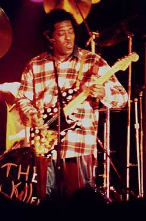

ПРОСТОЙ КУМИР ВЕЛИКОГО КУМИРА ПОКОЛЕНИЙКак уж все устроено в истории человечества: время и место, пересекаясь на одной какой-то личности, могут вознести ее очень высоко. История рока и блюза подчиняется этим же законам. В 60-х годах время и место, пересекаясь особенно часто на парнях с электрогитарами, выносили их на заоблачные вершины, осыпая почестями и славой, о которых они и мечтать ранее не смели. И все же, просто оказаться в нужное время и в нужном месте было недостаточно. Необходимо было иметь при себе определенный набор достоинств. И только лишь музыкальной одаренности иногда становилось мало. Вдобавок нужно было кое-что еще...
В тот исторический вечер, когда время и место пересеклись на Джимми Хендриксе, в тот легендарный момент, когда его впервые услышал бывший басист группы “Энималз” Чез Чендлер, Хендрикс, помимо таланта гитариста, имел еще чутье на новое звучание. Именно это и решило не только его судьбу, но и во многом направление рока конца 60-х.
Чез Чендлер, как и все остальные вслед за ним, был сражен звучанием, фантастического на тот период гитарного эффекта, умело и с великой фантазией применяемого Хендиксом. В Лондоне, особенно в клубе “Марки” и “ЮФО” можно было услышать великое разнообразие поразительных гитарных наворотов. Но никто, — ни Эрик Клэптон, ни Джефф Бек не могли проделать таких чудес, как Джимми. К тому же у Хендрикса имелись некоторые самые последние новинки. А именно, супер-эффект, создавший затем эталон звучания электрогитары на долгие годы.
Это был эффект “Wah-Wah”, известный у нас под названием “квакушка”. Именно все ее возможности и достоинства и демонстрировал Джимми перед случайно оказавшимся рядом Чендлером. Ну а далее — уже история.
Разумеется. Хендрикс был необычайно одаренным гитаристом и, возможно, доказал бы это безо всяких “квакушек”. И все же ранее, в те годы, когда он аккомпанировал Би Би Кингу, Литл Ричарду и Айку Тернеру, его хвалили, хлопали по плечу, говорили “молодец”, ну и на этом — все. Никакой сенсации. Если послушать те записи Хендрикса, что были сделаны до его пиротехнического перевоплощения, то можно сказать только то, что он отлично владел инструментом. Однако, виртуозов, великолепно владеющих гитарой, в Америке было много. И Джимми очень усердно изучал исполнительскую технику и манеру некоторых из них. Он неутомимо мотался по Штатам, пересекая континент в разных направлениях, чтобы увидеть воочию в Лос-Анжелесе, как Дик Дейл, развивая бешеную скорость на своем “Фендере”, стирает в порошок пять медиаторных косточек за пять минут. Затем Джимми отправился в Чикаго. Там уж ему точно было за кем понаблюдать.
Современный имидж Хендрикса, повернутого наркомана и экстравагантного прожигателя жизни, складывался в основном по последним годам его жизни. В середине 60-х, когда о нем ничего не знали, Джимми был очень даже прилежным и трудолюбивым учеником. И вдобавок неутомимым скаутом. Он искал передовые идеи у старших собратьев, более опытных и прославленных гитаристов. Оказавшись в Чикаго, он отправился наблюдать, как передвигает пальцами по грифу вовсе не Майкл Блумфилд (очень модный в 60-х чикагский гитарист), а Бадди Гай.
Бадди Гай в те же годы был так же легендарен в Чикаго, как и Джимми Пейдж в Лондоне. То есть пользовался громадным уважением и успехом, но только среди музыкантов и знатоков, оставаясь все еще неизвестным для широкой публики. Сейчас ни для кого ни секрет, что многие “убойные” гитарные соло на пластинках разных звезд того времени, писавшихся в студиях братьев Чесс, на самом деле принадлежали руке Бадди Гая. Он был студийным сессионным виртуозом и, подобно Джимми Пейджу в Лондоне, он играл за спинами великих звезд (в том числе и Мадди Уотерса). Но в чикагских студиях.
Хендрикс отлично знал, кто есть кто в Чикаго. Он сконцентрировал все свое внимание на Бадди Гае. Его легко можно было найти вечером в клубе, где тот работал после дневных студийных сессий. И то, что услышал Хендрикс, совсем не напоминало студийные соло прежнего Бадди Гая. Джимми был так же ошеломлен Гаем, как затем и Чез Чендлер самим Хендриксом. Причина в общем-то была одна и та же. Последнее слово гитарных новаторов — педаль “Wah-Wah”, знаменитая “квакушка”. И Бадди Гай использовал ее так искусно, что многие не верили, что эти звуки вообще исходят из его гитары. К сожалению, Бадди не записывал в те годы свои клубные выступления, а в студии все обстояло иначе. Леонард Чесс строго приказал Бадди выбросить вон все эти технические извращения или же убираться из его студии самому. Бадди должен был содержать семью. И потому не посмел рисковать заработком. К тому же он, в отличие от Хендрикса, был человеком кротким и вовсе не стремился стать супер-звездой, всегда опасаясь, что это нарушит его привычный размеренный уклад жизни и отгородит от семьи и друзей.
Гай по своему характеру явно не укладывался в типичный образ музыканта-звезды тех эксцентричных и сумасшедших лет. Он был слишком уравновешенным, да и по годам слишком взрослым. Таким образом, время и место пересеклись тогда на нем лишь для того, чтобы вытолкнуть его не на вершину, а перед глазами и ушами Джимми. И в тот раз эти две определяющие истории безошибочно (они никогда не ошибаются!) остановились на самом Джимми Хендриксе. Все, что нужно было для прыжка вверх, у него теперь имелось: новейший эффект “Wah-Wah”, и совершенная техника извлечения фантастических звуков. Уже где-то в конце 60-х, став сверх-звездой, Джимми рассказал об этом на пресс-конференции, перед миллионами телезрителей. Он совсем не скрывал, что перенял у Бадди Гая искусство извлечения с помощью специальной педали квакающих и стенающих звуков. Это, разумеется, ничуть не умаляло статус Хендрикса, как величайшего гитариста, чей изобретательный ум и воображение довели до совершенства дело, начатое Бадди Гаем.
В 1968-м году, когда супер-нова Джимми Хендрикса уже, казалось, готова была заменить затухающую звезду битломании, Бадди Гаю приходилось подрабатывать грузчиком и таскать кирпичи на стройке, чтобы заработать на хлеб. Братьям Чесс изменило чутье. Создав легендарный саунд чикагского блюза, они, однако, отказались двигаться дальше за временем. И безнадежно отстав от него, слетели с дистанции. Но и Джимми Хендрикса со всеми его психопиротехническими эффектами восприняли всерьез далеко не сразу и не все. Особенно не принимало его поначалу черное население Америки. Они возмущались и называли его извратителем их музыки. Хендрикс долго оставался предметом обожания в основном для психоделически настроенных белых — огромной аудитории, постоянно ищущей неизведанные звуковые ощущения.
Время шло дальше. Новые психоделические эксперименты устаревали. А вместе с ними и выходили из моды многие звуковые эффекты. Джимми Хендрикс стал исторической личностью, и его записи так и остались высшим эталоном того, что можно извлечь из гитары с помощью технического прогресса плюс возбужденного музыкального воображения. Но вот через двадцать с лишним лет после описываемых событий, уже в 1991-м году, над музыкальным небосклоном планеты разгорается еще одна супер-нова — звезда Бадди Гая. Причем лишь немногие помнили его по былым временам.
Звук его старого “Фендера-Стратокастера” чист и традиционен. Никаких педалей “Wah-Wah”. Все так, как когда-то хотели братья Чесс. И в то же время это современный саунд блюза, ставший эталоном для 90-х. Время вносит свои коррективы. Сейчас 62-летний Бадди Гай — лауреат “Грэмми”, создатель нескольких золотых и платиновых альбомов, широко известный во всем мире, владелец клуба “Бадди Гай ледженд” — всемирной Мекки блюз-фанов.
Он — звезда в полном смысле этого слова. Тем не менее никакого головокружения от высоты у него не замечается. Напротив, он даже сконфужен шумихой вокруг себя, и озабочен тем, что известность может помешать ему спокойно общаться с друзьями на улице. И вообще он не считает это нормальным для человека, даже очень талантливого — быть чьим-то кумиром. Такой вот он простой парень с гитарой — Бадди (то есть дружище) Гай.
Александр ЧЕЧЕТТ
Перепечатано из журнала Jazz-квадрат